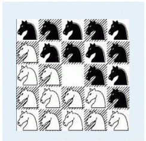

在一个 $5 \times 5$ 的棋盘上有 $12$ 个白色的骑士和 $12$ 个黑色的骑士， 且有一个空位。在任何时候一个骑士都能按照骑士的走法（它可以走到和它横坐标相差为 $1$，纵坐标相差为 $2$ 或者横坐标相差为 $2$，纵坐标相差为 $1$ 的格子）移动到空位上。
给定一个初始的棋盘，怎样才能经过移动变成如下目标棋盘：

为了体现出骑士精神，他们必须以最少的步数完成任务。
第一行有一个正整数 $T$，表示一共有 $N$ 组数据。
接下来有 $T$ 个 $5 \times 5$ 的矩阵，$0$ 表示白色骑士，$1$ 表示黑色骑士，*表示空位。两组数据之间没有空行。
*
对于每组数据都输出一行。如果能在 $15$ 步以内（包括 $15$ 步）到达目标状态，则输出步数，否则输出 $-1$。
2 10110 01*11 10111 01001 00000 01011 110*1 01110 01010 00100
7 -1
$T \leq 10$
 Comet OJ
Comet OJ